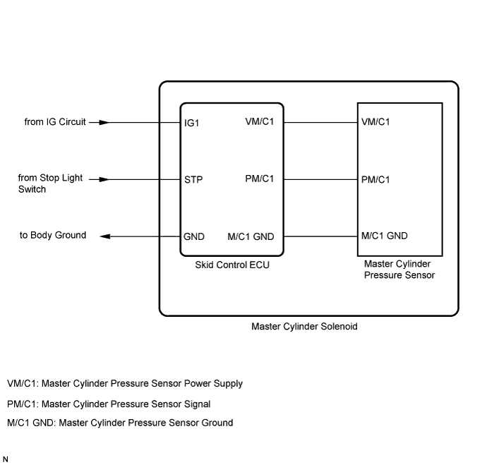
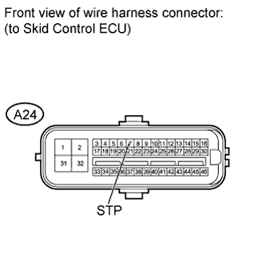

DTC C1246/46 Master Cylinder Pressure Sensor Malfunction |

| DTC Code | DTC Detection Condition | Trouble Area |
| C1246/46 | When any of the following conditions is detected: 1. All of the following conditions continue for at least 30 seconds.
3. Both of the following conditions continue for at least 1.2 seconds.
|
|
| 1.READ VALUE USING INTELLIGENT TESTER (MASTER CYLINDER SENSOR) |
Connect the intelligent tester to the DLC3.
Turn the engine switch on (IG) and turn the intelligent tester on.
Enter the following menus: Chassis / ABS/VSC/TRC / Data List.
| Tester Display | Measurement Item/Range | Normal Condition | Diagnostic Note |
| Master Cylinder Sensor | Master cylinder pressure sensor reading/min.: 0 V, max.: 5 V | When brake pedal is released: 0.3 to 0.9 V | The reading increases when the brake pedal is depressed. |
Check that the master cylinder pressure value of the master cylinder pressure sensor displayed on the intelligent tester changes when depressing the brake pedal.
| Result | Proceed to | |
| Master cylinder pressure sensor value does not change | LHD | A |
| RHD | B | |
| Master cylinder pressure sensor value changes but it is not normal | C | |
| Master cylinder pressure sensor value changes normally | D | |
|
| ||||
|
| ||||
|
| ||||
| A | ||
| ||
| 2.CHECK BRAKE PEDAL AND STOP LIGHT SWITCH INSTALLATION |
Check the brake pedal height (LHD: Click here/RHD: Click here).
Check the stop light switch installation (LHD: Click here/RHD: Click here).
| Result | Proceed to | |
| OK | A | |
| NG | LHD | B |
| RHD | C | |
|
| ||||
|
| ||||
| A | |
| 3.INSPECT SKID CONTROL ECU (STP TERMINAL) |
 |
Disconnect the A24 skid control ECU connector.
Measure the voltage according to the value(s) in the table below.
| Tester Connection | Switch Condition | Specified Condition |
| A24-7 (STP) - Body ground | Stop light switch on (Brake pedal depressed) | 8 to 14 V |
| A24-7 (STP) - Body ground | Stop light switch off (Brake pedal released) | Below 1.5 V |
|
| ||||
| OK | |
| 4.RECONFIRM DTC |
Clear the DTC (Click here).
Check if the same DTC is output (Click here).
| Result | Proceed to | |
| DTC is not output | A | |
| DTC is output | LHD | B |
| RHD | C | |
|
| ||||
|
| ||||
| A | ||
| ||